Verigy V93000 Direct-Probe: Evolution of the Verigy V93000 SOC Tester in Wafer Probing
Larry Dibattista and Daniel Lam, Verigy
Abstract
The increasing proliferation of multi-chip modules (MCMs) and ever decreasing integrated chip (IC) geometry, coupled with the constant drive to reduce overall cost-of-test (COT), have driven semiconductor test towards greater implementation of known-good-die (KGD) testing[1]. However, KGD testing requires increased functional test coverage at wafer probe. For today's high-speed processor units, functional testing requires that the tester-to-device wafer probing interface deliver similar performance as has traditionally existed in package test[2]. The V93000 Direct-Probe™ solution substantially narrows the interface performance gap between wafer probing and package test for applications using the Verigy V93000 SOC tester in a number of factors, while also maintaining the more stringent mechanical requirements expected of wafer probing environments. The V93000 Direct-Probe™ solution has been shown to be an important evolutionary step in the successful implementation of the Verigy V93000 SOC tester in a KGD wafer probing environment.
Introduction
Mobility, interconnectivity and multimedia are driving ICs toward smaller, ultra-thin packages of stacked chips with more functionality and greater performance. Today's higher levels of chip integration, combined with smaller form factors, make it increasingly challenging to perform final package test effectively and economically. To ensure quality, maximize yield and lower costs, the components of these highly integrated system-in-packages (SIPs) often require KGD reliability before entering the packaging step. Increasingly these components are being packaged and tested at the wafer level, commonly referred to as wafer level chip scale packages (WLCSPs).
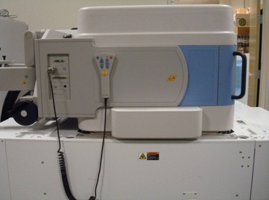
Figure 1 Verigy V93000 SOC Tester Docked to a Prober in the V93000 Direct Probe Configuration
By conducting at wafer stage the testing normally conducted after devices are packaged, many efficiencies are achieved that lower COT. Multi-site testing coupled with reduced indexing and faster test times boosts throughput. Failed die can be marked for removal and sometimes repaired ensuring fewer bad die make it to final packaging, increasing yields. In the case of new products and during process ramp, full test results at wafer provide faster feedback to designers and fabricators. The design effort and hardware cost of test setups can be shared between test points, reduced or even eliminated.
To take advantage of these process opportunities, chip designers and manufacturers seek ways to achieve the highest performance test at wafer probe. To date, manufacturers have struggled to get the test performance needed to fully perform functional testing directly on the wafer. The chief obstacle, among other factors, has been the loss in signal integrity caused by the distance between the tester pin electronics and the probe tip.
Solution Overview
The Verigy V93000 Direct Probe™ solution reduces the signal path length and number of signal path transitions between tester and probe card enabling the industry's highest test performance to now be brought to wireless, WLCSP, MPU and GPU devices at wafer probe.
Working closely with leading prober and probe card manufacturers, Verigy has successfully overcome traditional barriers to delivering high performance test at wafer probe. Current pogo tower-based wafer prober interfaces (WPIs) degrade signal quality because the signal must pass through many more signal transition points and additional signal path length than in package test. As shown in Figure 1, the Verigy V93000 Direct-Probe™ solution places the test head directly down into the prober and interfaces directly with the probe card. By removing the conventional mechanical interface between the wafer and tester, V93000 Direct-Probe™ reduces the length and number of signal-path connections, significantly improving signal integrity for device testing. With the distance and number of signal paths now minimized between tester pin electronics and probe points, the control and performance needed for accurate simulation and full functional testing of digital, mixed-signal and RF devices directly on the wafer is possible.
V93000 Direct-Probe™ utilizes an innovative probe card based on a single load board that directly incorporates the probe points. The single load board can leverage existing final test designs and can be shared between wafer probe and final test, reducing hardware development time and hardware cost.
V93000 Direct-Probe™ is mechanically designed and engineered for contact force management and with the planarity to support large surfaces and high pin counts at wafer test. The result: excellent mechanical and electrical contact is assured.
In short, with the Verigy V93000 Direct-Probe™ solution, semiconductor manufacturers can now take a major step forward toward complete high performance functional testing at wafer probe and significantly lower cost of test.
Benefits
Signal Integrity
By simply eliminating the traditional pogo tower from the signal path between the tester resource pin to the device-under-test (DUT), the total number of signal transitions is reduced by two. It is widely accepted that by decreasing the number of signal transitions in any particular signal path, the bandwidth of that signal path is expected to improve. As shown in Figure 2a and 2b, The Verigy V93000 Direct-Probe™ solution eliminates the two signal path transitions between the probe-interface board (PIB) and the pogo-tower, and the pogo-tower and the probe-card.
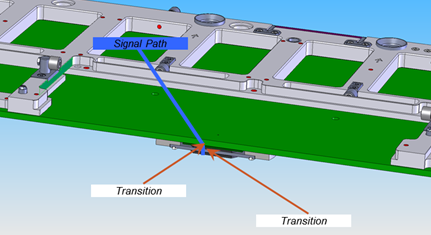
Figure 2a V93000 Direct Probe Probe-Card Signal Path Transitions
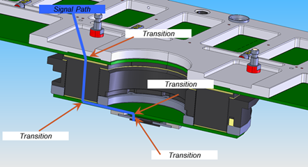
Figure 2b V93000 Pogo-Tower Based WPI Signal Path Transitions
If the two WPI signal paths are examined from an eye-diagram perspective, we can qualitatively observe the signal quality difference between the V93000 Direct Probe™ and the traditional pogo-tower based WPI. In Figure 3a, a 10 Gbps PRBS signal is observed passing through the traditional pogo-tower based WPI signal path, from the location where the tester resource contacts the PIB board, to the location where the probe array connects to the probe-card board. In Figure 3b, the same 10 Gbps PRBS signal is similarly observed passing through the V93000 Direct Probe™ signal path. Furthermore, the dielectric material of the pcbs in both WPIs is similar. We can observe a noticeable improvement of the eye opening and the jitter from the pogo-tower based WPI to the V93000 Direct Probe™ signal paths.
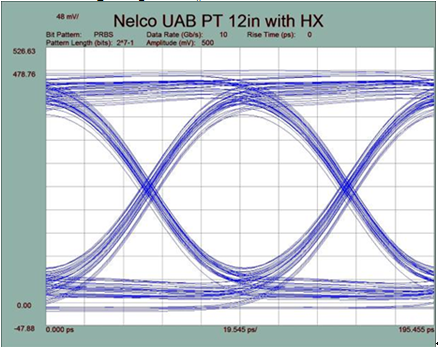
Figure 3a Eye Diagram of 10 Gbps PRBS Signal through 12" Pogo-Tower WPI
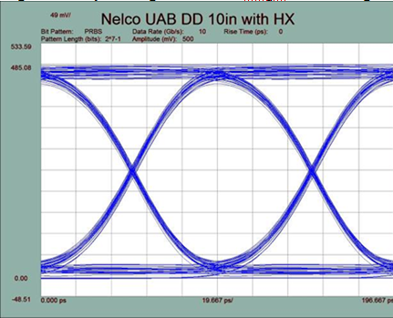
Figure 3b Eye Diagram of 10 Gbps PRBS Signal through V93000 Direct Probe™
Probe-Card Application Space
In order to support similar functional test coverage as in package test and high test parallelism, the probe-card must be capable of supporting a higher number of board-level components than traditional pogo-tower based WPI. The V93000 Direct Probe™ probe-card essentially leverages the same form as the standard V93000 load-board, thus providing the user a probe-card application space of 84000 mm2. As a comparison, this application space is 11 times larger than the V93000 9.5" WPI probe-card and 4 times larger than the V93000 12" WPI probe-card.
Correlation
Since the V93000 Direct Probe™ probe-card's form factor is leveraged from the standard V93000 load-board used at package test, the V93000 Direct Probe™ solution provides a number of correlation advantages between wafer probe and package test for the user. Primarily, the V93000 Direct Probe™ allows the user to use the same pcb design, including form factor and function, for both wafer probing and package testing. In addition, depending on the connection methodology of the probes to the probe-card pcb, it is even possible to use the same physical probe-card pcb in both wafer probe and package test. As an example, it is possible to design a V93000 Direct Probe™ probe-card pcb that initially implements a typical package socket with pogo-pins during package test, and then is reconfigured for wafer probing with a vertical probe-head assembly mounted in place of the package socket, similar to the one shown in Figure 4. In this instance, the user is able to develop and debug the device test program in an engineering lab environment with the V93000 Direct Probe™ probe-card directly docked onto the V93000 test-head, or additionally docked to a package handler. Once the test program is completed and proven with the package socket, the user is able to reconfigure the same physical probe-card with a vertical probe-head assembly and use that probe-card in wafer probing. This scenario allows for a high amount of leveraging between the package test program and the KGD test program, which in turn tends to promote better correlation results between the two test programs. Furthermore, since the pcb designs are exactly the same, there is a high physical correlation between package test and wafer probe. On a detailed level, assuming that the signal length difference between the package socket and probe-head assembly is negligible with respect to the signal wavelength, the expectation is that the physical signal and power characteristics of the interfaces at wafer probe and package test should be very similar.
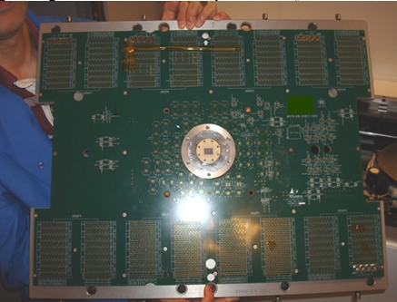
Figure 4 V93000 Direct Probe™ Probe-Card with Vertical Probe Array
Design Time and Cost
Another significant advantage of sharing the interface pcb design between package test and wafer probe is the reduction in hardware design time and cost. In a traditional test and package process flow, one pcb needs to be designed for the package test load-board, and two pcbs need to be designed for the wafer probe PIB and probe-card. With the V93000 Direct Probe™, a single pcb design replaces the three separate pcb designs in the traditional process, saving both time and cost expenditure in interface hardware. On a more specific level, when designing a custom PIB, significant engineering time must be spent to properly allocate the tester resources through the pogo-tower down to the probe-card. With the V93000 Direct Probe™, this time consuming activity is eliminated, and the single pcb is designed with the tester resources routed directly to the DUT pins, similarly to a package test load-board.
Scalability
A significant disadvantage that a pogo-tower based WPI imparts onto a scalable tester platform like the V93000 SOC tester, is that any particular pogo-tower design has a limited signal and power routing capacity. For example, the V93000 12" pogo-tower has a max signal routing capability of 1280 signals. A scalable tester platform would have the capability of increasing its signal and power capacity over time as the instruments within the tester increase their resource density. Due to the pogo-tower signal routing limitation, the user would be unable to take advantage of the ever increasing resource capability of the scalable tester. In contrast, the V93000 Direct Probe™ solution allows the user to fully take advantage of the V93000's scalability by having the capability to route every available tester resource on the tester to the DUT.
Design
The typical MPU or GPU device has approximately 5000 to 10000 connections at the die level. Due to the power requirements of these devices, most pins are actually power and ground assignments. In order to reliably contact these particular dies with existing probe technologies, the planarity of the tips of the probe array needs to be within the range of 5 to 20 microns in reference to the top of the wafer chuck. A probe array planarity beyond this range makes it very difficult to contact all the die connections reliably and evenly, which in turn leads to poor signal and power continuity results.
Furthermore, each probe tip exerts forces in the range of between 5 to 15 grams-force onto the die pin. For a 5000 pin die, the total force exerted onto the die can be in excess of 75 kilogram-forces. This force is transferred into the entire wafer probe interface stack-up, which primarily includes the probe array, the probe-card, and the prober head-plate. The force exhibits itself as a physical displacement, or deflection, of the entire wafer probe stack-up[3]. This deflection needs to be accounted for when determining the appropriate amount of wafer probing overdrive to specify on the prober. Typical users expect the overdrive settings on the prober to be within an expected range driven by past experience, the desire to maximize the probe life, and operating limits set by process. There is also a general concern that increasing the deflection can adversely affect the planarity of the probe array due to mechanical stress in the various wafer probe interface components.
The wafer probe interface should be capable of fulfilling both the planarity and the deflection requirements with repeatable results. The V93000 Direct Probe™ solution achieves this by mechanically referencing the probe-card assembly directly to the prober head-plate structure via a bridge design, as shown in Figure 5. The probe-card is securely clamped to the underside of the bridge beam, which also provides the planarity reference for the probe-card. With this particular structural design, when the probe array makes contact to the wafer, the resulting force is transferred directly from the probe array to the prober head plate structure.
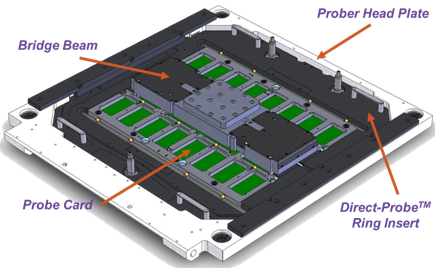
Figure 5 V93000 Direct Probe™ Head Plate with Probe Card
Planarity
Planarity of the probe array with the V93000 Direct Probe™ solution is managed in a number of ways. Firstly the planarity references of the various components that makeup the V93000 Direct Probe™ solution are specified to within tolerances that support the probe array planarity requirements. For example, the entire underside surface of the bridge beam, which spans a tip-to-tip length of 580 millimeters, is maintained with a planarity less than or equal to 25 microns. Furthermore, the primary datum of the V93000 Direct Probe™ probe-card, which spans an area of 180 by 300 millimeters, must be maintained within a planarity of 30 microns. During assembly of the probe-card, the probe array's planarity is adjusted in reference to this datum.
The planarity of the prober head-plate in a V93000 Direct Probe™ configuration can be easily determined by loading the Visual Planarity Gauge (VPG), into the prober and measuring the relative height positions of 3 metallized points on the glass photo-mask of the VPG using the prober's own look-up probe tip alignment camera. The 3 metallized points are located approximately 40 to 50 millimeters from the center of the 200 millimeter round glass photo-mask. Thus, in this manner, the prober head-plate's planarity can be measured and adjusted accordingly, until the maximum height difference of the 3 metallized points fall within a range which properly supports the probe array's planarity specification. Depending on the probe technology, the VPG gauge adjustment must typically be adjusted to within 5 and 20 microns.
The V93000 Direct Probe™ solution takes full advantage of the Verigy V93000 SOC Tester's mechanical docking infrastructure of floating tester interface and counter-balanced test-head. It has been shown, that when the test head interface is decoupled from the test-cell's rigid structures, such as the prober head-plate, the impact of the test-head docking is minimized[4]. In a V93000 Direct Probe™ configuration, when the test-head resources interface to the probe-card, the floating tester interface shifts in both height and angle. The shift occurs in such a manner as not to significantly alter the probe-card's planarity reference to the prober head-plate. In addition, due to test-head counterbalancing feature, the weight of the test-head does not impart any significant effect on the probe-card's height position in the prober. As a result of this mechanical docking infrastructure, the probe array height has been observed to vary less than 2 microns between separate dockings of the same probe-card.
Deflection
The V93000 Direct Probe™ prober head-plate structure was specifically designed to minimize the amount of deflection which the entire wafer probe interface stack-up experiences during contact between the probe array and the wafer. Figure 6 shows the measured characteristic deflection of the center of the V93000 Direct Probe™ head-plate structure on a Tokyo Electron Precio prober[5]. The deflection measurement was taken in reference to the mounting positions of the head-plate to the prober frame. From Figure 6, it can be observed that the head-plate structure generally exhibits a characteristic deflection of 1 micron per 1 kilogram-force.
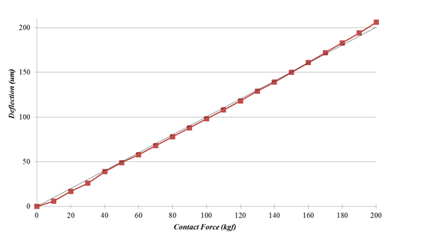
Figure 6 Characteristic Deflection of V93000 Direct Probe Head-Plate Structure on TEL Precio Prober (Courtesy of Tokyo Electron Ltd.)
In contrast, the V93000 9.5" pogo-tower based WPI exhibits approximately a 1.5 micron per 1 kilogram-force characteristic deflection, based on the finite element analysis shown in Figure 7 below. The simulation shows that the expected deflection at or near the center of the 9.5" probe-card is 296 microns when 200 kilograms-force is applied onto the probe array.
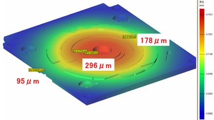
Figure 7 FEA Deflection Simulation of V93000 9.5" Pogo-Tower WPI on Prober Head-Plate (Courtesy of Tokyo Electron Ltd.)
Additionally, the V93000 Direct Probe™ bridge beam component was designed to aid in the reduction of the localized deflection of the probe-card pcb during contact between the probe array and the wafer. By simply placing a solid mechanical structure, commonly referred to as a probe backer, between the tester-side of the pcb and the underside of the bridge beam, the probe-card pcb deflection is significantly reduced. As observed in Figure 7a and 7b, the reduction in localized deflection from such a structure is approximately 100 fold.
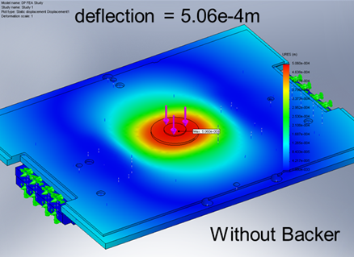
Figure 8a Localize Deflection of Probe-Card without a Probe Backer
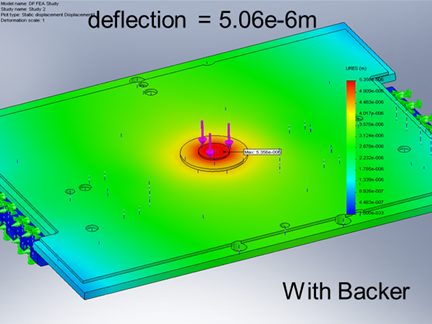
Figure 7b Localized Deflection of Probe-Card with a Probe Backer
Conclusion
The V93000 Direct Probe™ solution provides the highest performance for high-volume manufacturing, multi-site wafer probing of digital, mixed signal and RF devices. Its many benefits are:
- High-performance signal integrity from tester resource to DUT
- Large probe-card application space to support increased test coverage for KGD testing
- High package test to wafer probe correlation
- Shortened WPI hardware development time and cost
- Superior and repeatable mechanical performance for contact to large area and high pin-count probe arrays
- Allows the full utilization of the Verigy V93000 SOC Tester resources at wafer probe
In all, the V93000 Direct Probe™ solution is ideally suited for wafer probing of:
- High pin count MPUs and GPUs requiring final test digital performance and high current contacting
- Consumer audio/video, mixed signal, and RF devices that are rapidly moving toward WLCSP and require high performance wafer probe test
References
- Tokyo Electron Ltd. And Tokyo Electron America
- Microprobe Inc.
- William R. Mann, et al, "The Leading Edge of Production Wafer Probe Test Technology", Proceedings IEEE Int. Test Conference, 2004
- "ATE Interfacing Outgrows 12" Probe Boards", Evaluation Engineering, 2001
- Gunther Boehm, "Prober Stability with Large Probing Area and High Pincount", Southwest Test Workshop, 2006
- Roger Sinsheimer, "A Better Tester-Prober Interface Paradigm: Direct Docking", Fusion User's Conference, 2001
- http://www.tel.com/eng/product/wps/wpsprecio.ht